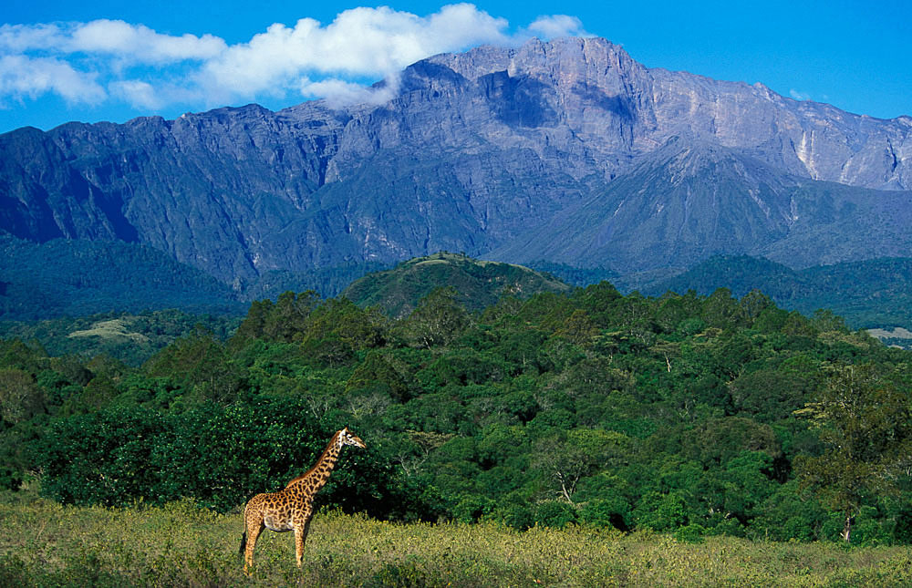

Arusha National Park: Ultimate Day Safari with Walking & Game Drives
4.9/5 (68 Reviews)
Safari Highlights
Discover Tanzania's most accessible wilderness on this action-packed Arusha National Park day safari, combining thrilling game drives with an unforgettable walking safari. Just 45 minutes from Arusha, this compact park packs incredible biodiversity - from lush montane forests to the sparkling waters of Momella Lakes and the dramatic slopes of Mount Meru.
Experience Africa's wildlife up close as you track buffalo herds on foot, spot giraffes silhouetted against volcanic peaks, and discover over 400 bird species. This family-friendly safari offers the perfect introduction to Tanzania's natural wonders with diverse activities that go beyond traditional game viewing.
Unique Experiences
Walking Safari: Feel the African earth beneath your feet as you track wildlife with an expert guide and armed ranger (1-2 hours).
Diverse Game Drives: Explore different ecosystems from open savannah to forest glades in our custom safari vehicles.
Birdwatcher's Paradise: Spot flamingos, kingfishers, and rare forest species among 400+ recorded birds.
Volcanic Landscapes: Marvel at Mount Meru's perfect cone and the park's seven spectacular crater lakes.
Perfect For
Families with children (minimum age 8 for walking safari)
First-time safari-goers wanting a gentle introduction
Photographers seeking diverse landscapes and wildlife
Those with limited time but unlimited curiosity
Adventure seekers wanting beyond-the-vehicle experiences
This Arusha National Park day trip delivers Tanzania's safari magic in a compact, accessible package - perfect as a standalone adventure or add-on to longer northern circuit safaris. Book now for an unforgettable wilderness experience just moments from Arusha's hotels!
Reserve Your Safari
Day Itinerary
Day Itinerary
Arusha to Arusha National Park
Morning: Game Drive & Wildlife Discovery (8:00 AM - 11:30 AM)
After pickup from your Arusha/Moshi hotel, we'll make the scenic 45-minute drive to Arusha National Park's main gate. Following registration, begin your adventure with a morning game drive through diverse habitats - from open grasslands where giraffes and buffalo graze to forest edges where colobus monkeys leap through ancient trees.
Midday: Walking Safari (11:30 AM - 1:00 PM)
Meet your armed ranger for the highlight of your day - a guided walking safari through the park's wilderness areas. Feel your senses come alive as you track wildlife on foot, learning to identify animal tracks, medicinal plants, and the subtle signs of nearby creatures. This immersive experience brings you closer to nature than any vehicle-based safari.
Lunch: Picnic with a View (1:00 PM - 2:00 PM)
Enjoy a delicious packed lunch at one of the park's scenic viewpoints, with Mount Meru as your backdrop. Watch for waterbuck and bushbuck visiting the Momella Lakes while you dine, and listen for the calls of fish eagles overhead.
Afternoon: Crater Lakes & Birdwatching (2:00 PM - 4:30 PM)
Explore the park's spectacular crater lakes region, where flamingos create pink ribbons across alkaline waters. Your guide will help spot rare forest birds and explain the area's volcanic geology before we begin our return to Arusha, arriving by 5:30 PM.
Today's Wildlife Highlights:
- Large buffalo herds grazing in open grasslands
- Troops of black-and-white colobus monkeys
- Giraffes moving gracefully between acacia trees
- Flamingos and other waterbirds at Momella Lakes
- Possible elephant sightings in forested areas


Included
Excluded
Included
- Round-trip transportation from Arusha/Moshi
- Professional safari guide (English-speaking)
- Arusha National Park entry fees
- Walking safari with armed ranger
- Picnic lunch with bottled water
- All game drives in custom safari vehicle
- All government taxes and VAT
Excluded
- International flights
- Tanzania visa fees
- Travel insurance (recommended)
- Alcoholic beverages
- Gratuities for guides/rangers
- Personal expenses (souvenirs, etc.)
Customize Your Safari
Experiences
Arusha National Park offers unique wildlife encounters beyond traditional game drives. Our carefully designed activities provide intimate connections with nature and unforgettable safari moments.
Core Experiences
-
Guided Walking Safari :
Experience Africa's wilderness on foot with an expert guide and armed ranger. Learn to track animals, identify medicinal plants, and interpret wilderness signs while walking through diverse habitats where buffalo and antelope roam.

-
Momella Lakes Exploration :
Discover the park's seven crater lakes, each with distinct colors and ecosystems. Watch for flamingos, hippos, and waterbuck while learning about the area's volcanic origins and the lakes' vital role in the ecosystem.
Special Encounters
-
Colobus Monkey Tracking
Search for troops of acrobatic black-and-white colobus monkeys in the park's forested areas. These striking primates, with their flowing white tails and mantles, are among Tanzania's most photorealistic monkeys.
-
Mount Meru Viewpoints (Seasonal)
When clouds permit, enjoy spectacular views of Mount Meru's volcanic cone. Learn about this active stratovolcano and its importance as Tanzania's second-highest peak and Kilimanjaro's little-known neighbor.

Ready for Your Arusha Adventure?
Ask about our early bird specials for morning wildlife activity!